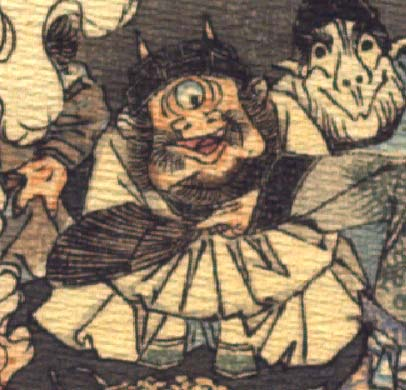

一つ目の鬼。黒い頭巾状のものをかぶり、その上から2本角が突き出ている。耳は大きく、額の真ん中に大きな目玉が1つついている。鼻は上を向いて、横に広がり、口ひげとあごひげを生やしている。白い衣服を着て、座り、両手を組んで袖の中に入れている。
著作者：J.Dautremer／出典：親書誌：U426_nichibunken_0123：Le vieillard et les démons／日付：2006／資源識別子：U426_nichibunken_0123_0003_0013
Copyright (c)2010- International Research Center for Japanese Studies, Kyoto, Japan. All rights reserved.